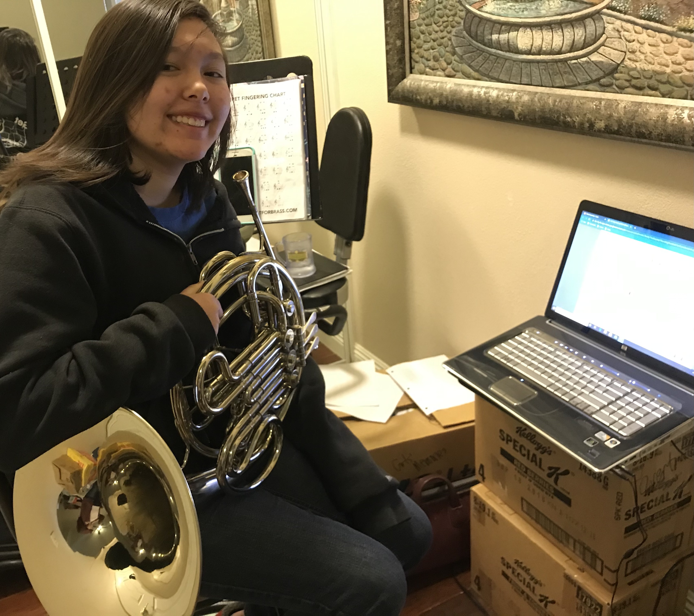

As a gamer, I often do not recognize the critical analysis and thinking designers ensure while
designing these game elements. Given millions of games that exist today and the speed in which they
are updated, I assumed game design is fairly simple. However, these designers follow certain
principles to ensure user engagement and seamless gaming experience. These principles include
setting clear goals and objectives, engaging core mechanics, maintaining game flow and player
experience, balancing the game, offering feedback and rewards, playtesting, and sound designing.
Each of these principles are carefully implemented as a guidelines to create well-structured,
immersive nad enjoyable game experiences
Visual Thinking Analysis
The image Ava used portrays her musical instrument (trumpet), laptop, and other musical items around
her.
It seems to highlight her experience during the quarantine, as we previously discussed.
The most interesting aspect of the image is the space in which it was taken. The environment
consists of stacks of boxes, chair, musical notes, laptop, her trumpet, and posters
attached to the wall. It feels cluttered, which reflects the quarantine experience many of us
experienced for
being at home so long.
We can predict that she was in a band at the time
the image was taken. She is holding her trumpet, there are musical notes on the floor and on the
stand, and her laptop is on with a music lesson. The most mysterious aspect is the half-shown poster
or painting on the wall. The poster is almost hidden from the picture, which could be intentional or
not. Because only half of it is visible, it feels as though something is missing.
The image has a clear intention and purpose due to the elements included in it. We can predict that
the message relates to her passion for music. Even the partially shown images seem to convey a
deeper
meaning. I would recommend using an image that does not immediately expose the message. One that is
more difficult to interpret. It can unlock meanings she may not have
anticipated.

Ava Overton, April 2026
I am most excited about the image depicting the redwood trees at the arboretum. This image is unique
because it allows us to see the trees from a different perspective. The picture was taken from the
ground looking upward, showcasing small details we might not have anticipated. You really have to
think about the photographer’s position to fully understand the thought process behind it.
This image relates to my new topic, which is seeing things from a different perspective. The image
demonstrates that idea because of the angle from which it was captured. It presents a new perspective
of the redwood trees students encounter daily, but not from that viewpoint.
The idea is to communicate the beauty of looking at things from different angles. My collection
includes a series of low-angle images. I need to focus on the arrangement of the images in order to
effectively communicate a story, rather than simply placing random images on the page. I may also
focus on the lighting, with the brightest images displayed first and the darkest ones placed toward
the end.
Chinomso Augustine, April 2026
Visual Thinking
Stories are conveyed in many different ways, through books, movies, music, and more. In my
perspective, however, the most powerful stories are those told through images.
As a photographer, my role is to capture moments that transform into memories. Every event I
photograph, whether sports, graduations, birthdays, or portraits, holds powerful emotions and
meaning.
What makes images unique is that they can convey different meanings to different people. A picture
of a sunrise may symbolize a new beginning or remind someone that nothing lasts forever because the
sun eventually sets. To another person, however, the same image may hold an entirely different
meaning.
Additionally, the presentation of images can deepen their impact. Black-and-white photography,
ironically, often captures more attention because the absence of color evokes strong emotions and
experiences. For some, it brings back memories of the past, while for others it feels unfamiliar and
therefore more impactful.
Images are a powerful form of storytelling.
Overlays & Modals
An overlay is a UI method used to display an element over an application window to capture a user's
attention. According to Naema Baskanderi’s article, "Best Practices for Modals / Overlays / Dialog
Windows," this strategy must be applied carefully.
To be effective, an overlay requires four critical components:
Title: Provides immediate context for the user’s current task.
Size: Ensures the modal does not overwhelm the entire screen.
Button Labels: Defines the specific actions available.
Escape Hatch: (Close icon or 'Esc' key) ensures users can easily exit.
Furthermore, proper sizing is essential to maintaining the user’s sense of placement within the
application.
Form Design
Forms are everywhere on the web. Every aspect of a well-designed form serves the ultimate purpose of
convincing a user to complete it with less stress.
Minimizing Input Volume
Reduces cognitive load and increases completion rates.
One-Column Layout
Maintains vertical momentum and guides the eye straight down.
Multi-Step Organization
Breaking info into chunks prevents burnout.
Asking Easy Questions First
Encourages momentum and reduces initial friction.
Explaining Input Formats
Clear instructions reduce user frustration.
Example: Handshake sign-up is minimal and user-friendly.